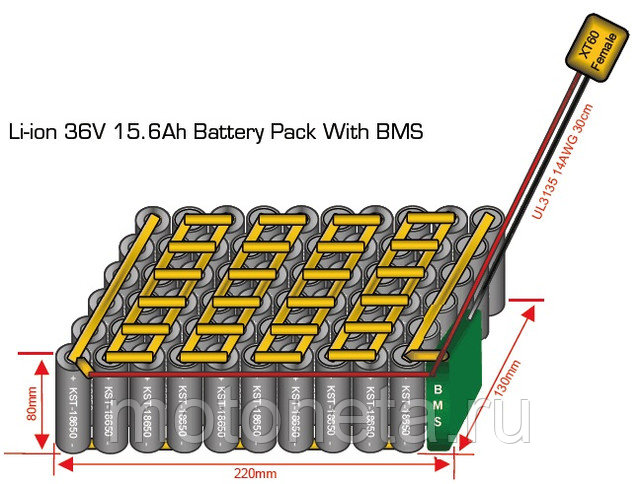

Двигатель. На бездорожных самокатах стоят мощные двигатели, которые рассчитаны на преодаление препядствий, а не на развитие скорости.

Аккумулятор. В отличие от городских самокатов аккумулятор ставится с большей токоотдачей и, зачастую, напряжением, чтобы можно было привести больший мотор в действие.
Рама. Корпус моделей для бездорожья выполнен из алюминиевого сплава, благодаря чему уменьшается вес изделия, не влияя на прочность конструкции.

Колеса. Минимальный диаметр колес лучших электросамокатов для бездорожья составляет 8 дюймов. Надувные разновидности улучшают амортизацию и лучше нивелируют любые вибрации.
Подвеска. Мощная пневматическая подвеска гарантирует плавный ход, смягчение ударов даже при наезде на бордюр или попадании в выбоину.
Тормоза. Дисковую гидравлику, которая устанавливается на электросамокаты, отличает надежность, хорошее сцепление и высокая степень безопасности.